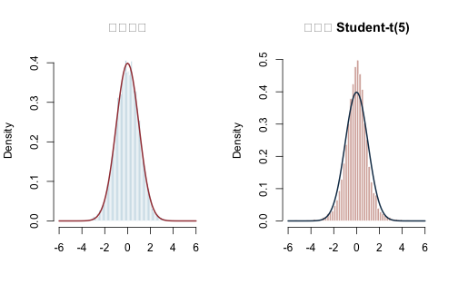
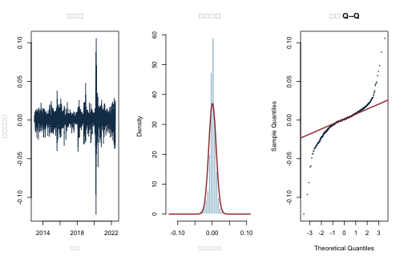
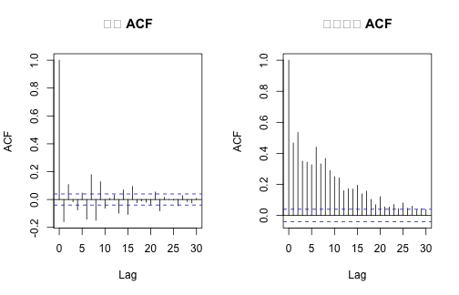

《財務時間序列分析》線上附錄
R03：分配、厚尾與經驗特徵
本附錄對應第 3--4 章。先以固定種子比較常態與標準化 Student-\(t\) 模擬，再用凍結的股票日報酬面板建立等權教學投資組合，檢查分位數、偏態、峰度、Q--Q 圖、報酬與平方報酬的自相關。教學投資組合不是官方 S\&P 500 指數。
knitr::opts_chunk$set(
echo = TRUE, message = FALSE, warning = FALSE,
fig.width = 7, fig.height = 4.5
)
set.seed(20260716)
root_candidates <- c(".", "..")
is_root <- vapply(root_candidates, function(x) {
file.exists(file.path(x, "main.tex"))
}, logical(1))
stopifnot(any(is_root))
project_root <- root_candidates[which(is_root)[1]]
project_path <- function(...) file.path(project_root, ...)
描述統計函數#
以下峰度使用常態分配等於 3 的定義；超額峰度等於峰度減 3。有限樣本估計量不是唯一版本，因此報告時必須說明公式。
sample_moments <- function(x) {
x <- x[is.finite(x)]
centered <- x - mean(x)
m2 <- mean(centered^2)
m3 <- mean(centered^3)
m4 <- mean(centered^4)
c(
n = length(x),
mean = mean(x),
sd = sd(x),
skewness = m3 / m2^(3 / 2),
kurtosis = m4 / m2^2,
excess_kurtosis = m4 / m2^2 - 3,
q01 = unname(quantile(x, 0.01)),
q05 = unname(quantile(x, 0.05)),
median = median(x),
q95 = unname(quantile(x, 0.95)),
q99 = unname(quantile(x, 0.99))
)
}
常態與厚尾模擬#
自由度 5 的 Student-\(t\) 變異數為 \(5/(5-2)\)，所以除以其標準差後與標準常態具有相同理論變異數。差異主要在尾端。
n_sim <- 10000L
normal_draw <- rnorm(n_sim)
t5_draw <- rt(n_sim, df = 5) / sqrt(5 / 3)
simulation_summary <- rbind(
Normal = sample_moments(normal_draw),
Student_t5 = sample_moments(t5_draw)
)
round(simulation_summary, 4)
## n mean sd skewness kurtosis excess_kurtosis q01
## Normal 10000 0.0101 1.0136 -0.0016 3.0640 0.0640 -2.4048
## Student_t5 10000 0.0007 1.0129 -0.1179 8.1864 5.1864 -2.6003
## q05 median q95 q99
## Normal -1.6583 0.0099 1.6794 2.3828
## Student_t5 -1.5806 0.0158 1.5817 2.6540
par(mfrow = c(1, 2))
hist(
normal_draw, breaks = 80, probability = TRUE,
xlim = c(-6, 6), col = "#9FC2D4", border = "white",
main = "標準常態", xlab = ""
)
curve(dnorm(x), add = TRUE, lwd = 2, col = "#A34045")
hist(
t5_draw, breaks = 100, probability = TRUE,
xlim = c(-6, 6), col = "#D6B0A9", border = "white",
main = "標準化 Student-t(5)", xlab = ""
)
curve(dnorm(x), add = TRUE, lwd = 2, col = "#173B57")

par(mfrow = c(1, 1))
Jarque--Bera 統計量#
以本附錄的偏態 \(S\) 與峰度 \(K\)， \[ JB=n\left\{\frac{S^2}{6}+\frac{(K-3)^2}{24}\right\}. \] 卡方近似依賴獨立同分配與有限高階動差；在金融時間序列有相依性或條件異質變異時，不能把下列 \(p\) 值當成完整模型診斷。
jarque_bera <- function(x) {
m <- sample_moments(x)
stat <- m["n"] * (
m["skewness"]^2 / 6 + m["excess_kurtosis"]^2 / 24
)
c(statistic = stat, p_value_iid_asymptotic = pchisq(stat, 2, lower.tail = FALSE))
}
rbind(
Normal = jarque_bera(normal_draw),
Student_t5 = jarque_bera(t5_draw)
)
## statistic.n p_value_iid_asymptotic.n
## Normal 1.70919 0.4254555
## Student_t5 11230.87169 0.0000000
固定股票面板與等權教學投資組合#
固定檔有一欄日期與 89 檔股票日簡單報酬。它先依股票代碼分組再計算落後報酬，且只保留面板共同交易日；細節與授權注意事項見 data/DATA_SOURCES.md。
panel_path <- project_path(
"data", "processed", "sp500_returns_balanced_2013_2022.csv"
)
panel <- read.csv(panel_path, check.names = FALSE)
dates <- as.Date(panel$date)
R <- as.matrix(panel[, setdiff(names(panel), "date")])
storage.mode(R) <- "double"
stopifnot(!anyNA(dates), !anyNA(R), all(diff(dates) > 0))
portfolio_return <- rowMeans(R)
empirical <- data.frame(date = dates, return = portfolio_return)
c(
start = format(min(empirical$date)),
end = format(max(empirical$date)),
observations = nrow(empirical),
stocks = ncol(R)
)
## start end observations stocks
## "2013-01-03" "2022-06-22" "2384" "89"
round(sample_moments(empirical$return), 5)
## n mean sd skewness kurtosis
## 2384.00000 0.00076 0.01075 -0.67951 22.94458
## excess_kurtosis q01 q05 median q95
## 19.94458 -0.03040 -0.01555 0.00106 0.01469
## q99
## 0.02507
jarque_bera(empirical$return)
## statistic.n p_value_iid_asymptotic.n
## 39696.89 0.00
經驗分配、常態 Q--Q 圖與時間圖#
par(mfrow = c(1, 3))
plot(
empirical$date, empirical$return,
type = "l", col = "#173B57",
xlab = "日期", ylab = "日簡單報酬", main = "時間圖"
)
hist(
empirical$return, breaks = 70, probability = TRUE,
col = "#9FC2D4", border = "white",
xlab = "日簡單報酬", main = "經驗分配"
)
curve(
dnorm(x, mean(empirical$return), sd(empirical$return)),
add = TRUE, lwd = 2, col = "#A34045"
)
qqnorm(
empirical$return, pch = 16, cex = 0.45,
col = "#173B57", main = "常態 Q--Q"
)
qqline(empirical$return, col = "#A34045", lwd = 2)

par(mfrow = c(1, 1))
Q--Q 圖的尾端偏離比只看單一峰度更容易定位哪一側出現極端值。圖形是診斷，不是分配模型已被證明的結論。
報酬與平方報酬的時間相依#
par(mfrow = c(1, 2))
acf(empirical$return, lag.max = 30, main = "報酬 ACF")
acf(empirical$return^2, lag.max = 30, main = "平方報酬 ACF")

par(mfrow = c(1, 1))
diagnostics <- rbind(
return = unlist(Box.test(
empirical$return, lag = 20, type = "Ljung-Box"
)[c("statistic", "parameter", "p.value")]),
squared_return = unlist(Box.test(
empirical$return^2, lag = 20, type = "Ljung-Box"
)[c("statistic", "parameter", "p.value")])
)
diagnostics
## statistic.X-squared parameter.df p.value
## return 422.197 20 0
## squared_return 4037.729 20 0
原始報酬的線性相關與平方報酬的波動相依是兩個不同問題。Ljung--Box 的小 \(p\) 值只指出指定落後集合與零自相關不相容；若平方報酬有相依，後續應考慮第 11--12 章的條件變異模型。
極端值不是自動刪除理由#
extreme_rows <- empirical[
order(abs(empirical$return), decreasing = TRUE)[1:10],
]
extreme_rows
## date return
## 1812 2020-03-16 -0.12158108
## 1818 2020-03-24 0.10569128
## 1810 2020-03-12 -0.09631514
## 1811 2020-03-13 0.08768848
## 1807 2020-03-09 -0.08087147
## 1827 2020-04-06 0.07030369
## 1820 2020-03-26 0.06286504
## 1873 2020-06-11 -0.06081300
## 1814 2020-03-18 -0.05945845
## 1813 2020-03-17 0.05739548
正式分析應回到來源核對這些日期是否為市場事件、公司行動或建檔錯誤。只有確認資料錯誤才應修正；真實市場極端值恰是風險分析的重要資訊。